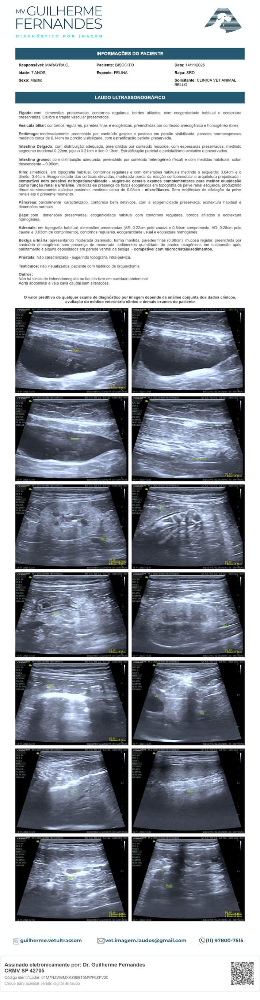

🚨 Críticos
Infartos renais bilaterais — US 15/05/2026
RE: 0,31×0,56cm. RD: 0,76×1,00cm (cresceu de 0,98×0,86cm). Ambos com nefropatia crônica e contornos irregulares (RE).Retroperitônio esquerdo com ecogenicidade aumentada
Tecidos adjacentes ao rim esquerdo alterados — possível agudização DRC.Pâncreas com parênquima grosseiro — achado mais preocupante
Lobo esq. 0,64–0,73cm. Sugestivo de pancreatopatia crônica e/ou infiltrado neoplásico. Investigação urgente.⚠️ Atenção
Fígado com ecogenicidade reduzida — toxemia / hepatopatia aguda
Inversão em relação ao US de março. Correlacionar com clínica e laboratório.Fluidoterapia SC — Ringer Lactato 200ml 2x/semana
Prescrita em 21/05/2026. Controle da desidratação crônica por DRC.Fósforo 6,28 mg/dL — acima do alvo para IRIS 2 (≤4,6)
Quelante de fósforo prescrito em 10/08/2026. Administrar junto às refeições principais (2–3x/dia). Repetir fósforo em ~30 dias (~25/08/2026).Duodeno espessado + pâncreas grosseiro — investigar
Hipótese: DII ou linfoma. Encaminhado para Dra. Gabriele (gastro) · Animall Vet. Biópsia pode ser necessária.Repetir exames em ~30 dias (~25/08/2026)
Prioridade: fósforo + creatinina + ureia. Avaliar resposta ao quelante.Acidose metabólica — Hemogasometria 14/11/2026 (Vetdue)
HCO3 18,1🔴 (ref 18–24) · CO2 total 19,2🔴 · pH 7,34 ✅ · Na+ 165,0⚠️ (hipernatremia leve) · K+ 4,6✅ · BE -6,0🔴. Monitorar evolução — correlacionar com DRC.K+ baixo confirmado em out/26 — Kalium Gatos + Citrato de Potássio prescrito
K+ 2,00🔴 na hemogasometria de 02/10/26 (atentar para possível interferência de amostra). Kalium Gatos 1,5cp/12h + Citrato K+ 300mg/12h desde 16/10/2026. Reavaliação com nov/26: K+ 4,6✅.Creatinina 1,97 mg/dL — nov/26! Continua IRIS 2
Queda: 3,40→3,19→2,90→2,08→2,84→1,97 (fev→mar→mai→jul→out→nov/26). Creatinina mais baixa já registrada! Tratamento funcionando.Proteinúria ++ — Urina 15/11/2026 (cistocentese)
Proteínas ++ no EAS — significativo em paciente com DRC. Correlacionar com RPCU (último 0,06 em jul/26). Solicitar novo RPCU para quantificar.Ureia 72,62 mg/dL — acima da referência (ref. ≤64)
Piorou em relação a jul/26 (59,60) mas compatível com DRC. Monitorar.✅ Positivos
RPCU 0,06 — perda proteica urinária normal
Sem proteinúria significativa. Ureia 59,60 ainda dentro da referência (limite 64 mg/dL).Hemograma normal — sem anemia
Hematócrito 44% · Hemoglobina 14,8 g/dL · Leucócitos e plaquetas normais.🔬 Estadiamento IRIS — Creatinina nov/26: 1,97 mg/dL
E1 <1,6E2 1,6–2,8E3 2,9–5,0E4 >5,0
🎉 Estágio 2! Creatinina mais baixa da série: 3,40→3,19→2,90→2,08→2,84→1,97. Manter fluidoterapia SC + dieta renal.
📝 Resumo para veterinária
Biscoito · ~7 anos e 9m · Gato SRD · Chip 981020004466436 · Peso 6,5kg (16/10/26)
DRC estágio 2. Creatinina: 3,40→3,19→2,90→2,08→2,84→1,97 mg/dL (nov/26 — mínima registrada!). Ureia 72,62 (acima ref.). Fósforo 4,46 ✅. Plaquetas 281mil (leve queda). Proteína total 9 g/dL ⚠️. Urina 15/11/26 (cistocentese): Proteínas ++ ⚠️, densidade 1023, pH 6, sem cristais/bactérias. US 14/11/26 (Dr. Guilherme Fernandes): Pâncreas NORMALIZADO ✅ (dimensões normais, ecogenicidade preservada — era grosseiro 0,74cm em out). Fígado NORMALIZADO ✅ (ecogenicidade habitual — era reduzida). Rins: RE 3,44cm, microlitíase pélvica 0,08cm (diminuiu). Bexiga: microcristais/sedimentos. Hemogasometria 14/11: acidose metabólica (HCO3 18,1🔴). K+ 4,6 ✅ (normalizou!). Kalium Gatos + Citrato K+ + Ringer SC + Seretide.
📊 Função Renal
| Parâmetro | Fev/2026 | Mar/2026 | Mai/2026 | Jul/2026 | Out/2026 | Nov/2026 🆕 | Ref. Felino | Evolução |
|---|---|---|---|---|---|---|---|---|
| Ureia | 131,80 | 143,82 | 50,0 | 59,60 | 110,9 | 72,62 | 10–64 mg/dL | ⚠️ Acima |
| Creatinina | 3,40 | 3,19 | 2,90 | 2,08 🎉 | 2,84 | 1,97 🎉 | 0,5–1,7 mg/dL | 🟢 Melhorou! |
| Fósforo | — | — | 4,60 | 6,28 | — | 4,46 | DRC: <4,6 | 🟢 Dentro alvo |
🩸 Hemograma comparativo
| Parâmetro | Jul/2026 | Nov/2026 🆕 | Ref. Felino | Status |
|---|---|---|---|---|
| Eritrócitos | 9,35 | 9,28 | 5,0–10,0 M/mm³ | 🟢 Normal |
| Hemoglobina | 14,8 | 14,66 | 8–15 g/dL | 🟢 Normal |
| Hematócrito | 44% | 44% | 24–45% | 🟢 Normal |
| Leucócitos | 9.600 | 9.400 | 5.500–19.500/mm³ | 🟢 Normal |
| Eosinófilos | 1% | 5% | 2–12% | 🟢 Normal |
| Linfócitos | 11% | 24% | 20–55% | 🟢 Normal |
| Monócitos | — | 0% | 1–4% | 🟢 Normal |
| Plaquetas | 242 mil | 281 mil ⚠️ | 300–700 mil/mm³ | ⚠️ Leve queda |
| Proteína total | 7,60 | 9,0 ⚠️ | 5,6–8,0 g/dL | ⚠️ Levemente alto |
🧪 Urina Tipo 1 + RPCU — 25/07/2026 · Lyra Lab
Caracteres Físicos e Químicos
Densidade1044 (ref. 1020–1050) ✅
pH6,0 (ref. 5,5–6,5) ✅
ProteínasAté 30mg (normal) ✅
GlicoseNEGATIVO ✅
Sangue OcultoNEGATIVO ✅
Sedimento e RPCU
Hemácias0–2/campo ✅
Leucócitos0–2/campo ✅
CristaisAUSENTES ✅
BactériasRARAS ✅
RPCU0,06 — NORMAL ✅
💨 Hemogasometria venosa — 02/10/2026 · Vetuslab · Animal Bello
Valores muito alterados — possível interferência de amostra. Na+ 121,3 e Ca++ <0,25 são contraditorios com Cl- >140. Interpretar com cautela em contexto clínico.
Gases e Ácido-Base
pH7,533 🔴 (alcalose, ref 7,27–7,42)
PCO₂44,6 mmHg ✅
HCO₃37,6 mmol/L 🔴 (ref 16–30)
BE(ecf)+14,9 🔴 (alcalose metabólica)
Ácido Lático2,42 mmol/L ⚠️ (ref 0,5–2,7)
Eletrólitos
Sódio121,3 mmol/L 🔴 (hiponatremia grave?)
Potássio2,00 mmol/L 🔴 (hipocalemia)
Cloreto>140 mmol/L 🔴 (hipercloremia?)
Cálcio ionizado<0,25 mmol/L 🔴 (hipocalcemia grave?)
Hematócrito (PCV)50% ⚠️ (ref 24–48%)
🧪 Urina Tipo 1 — 15/11/2026 · Vetuslab · Animal Bello 🆕
Proteinúria ++ — significativa em paciente com DRC. Correlacionar com RPCU (último 0,06 em jul/26). Solicitar novo RPCU.
Caracteres Físicos e Químicos
ColetaCistocentese
Densidade1023 ✅ (ref. 1020–1050)
pH6 ✅
Proteínas++ ⚠️ (proteinúria)
GlicoseAusente ✅
Sedimento
Hemácias1–2/campo ✅
Leucócitos2–3/campo ✅
CristaisAusente ✅
BactériasAusente ✅
MV resp.Dra. Isabella / MV Stephanie Brizzi CRMV-SP 42.363
💨 Hemogasometria venosa — 14/11/2026 · IDEXX VetStat · Vetdue
Acidose metabólica — HCO₃ e CO₂ total abaixo do referência. Sódio no limite superior (165,0 mmol/L).
Gases e Ácido-Base
pH7,34 ✅ (ref 7,24–7,40)
pCO₂37,0 mmHg ✅ (ref 34–38)
CO₂ total19,2 mmol/L 🔴 (ref 27–31)
HCO₃18,1 mmol/L 🔴 (ref 22–24) — acidose metabólica
Base Excess-6,0 mmol/L 🔴
Eletrólitos
Sódio165,0 mmol/L ⚠️ (ref 150–165, limite sup.)
Potássio4,6 mmol/L ✅
Cloreto120,0 mmol/L ✅
🔊 Evolução — Ultrassons
| Achado | Mar/2026 | Mai/2026 | Jul/2026 | Out/2026 | Nov/2026 🆕 | Evolução |
|---|---|---|---|---|---|---|
| RE — tamanho | 3,07cm | 3,05cm | 3,03cm | 3,22cm | 3,44cm | 🟡 DRC |
| RD — tamanho | 3,59cm | 3,60cm | 3,51cm | 3,64cm | — | 🟡 Estável |
| Infarto renal RE | 0,98×0,86cm | 0,31×0,56cm | 0,28×0,43cm | 0,35×0,38cm | — | ⚠️ Persistente |
| Infarto renal RD | — | 0,76×1,00cm 🔴 | 0,49×1,11cm | 0,37×0,83cm | — | ⚠️ Persistente |
| Retroperitônio esq. | Normal | Ecogen. aumentada | Ecogen. aumentada | Ecogen. aumentada | — | ⚠️ Persiste |
| Pâncreas | 0,59cm normal | 0,64–0,73cm grosseiro | 0,59cm grosseiro | 0,74cm grosseiro 🔴 | Normal ✅ | 🟢 Melhorou! |
| Fígado | Ecogen. aumentada | Ecogen. reduzida | Ecogen. reduzida | Ecogen. reduzida 🔴 | Normal ✅ | 🟢 Normalizou! |
| Bexiga | Normal | Sedimento aderido | Cristais/sedimentos | Cristais + sedimento parede (0,11cm) | Microcristais/sedimentos | ⚠️ Persiste |
| Microlitíase RE | — | — | 0,18cm | Pielectasia 0,28cm + microlitíase | Microlitíase 0,08cm (s/ pielectasia) | 🟡 Melhorou |
🔊 US Abdominal — 14/11/2026 · Dr. Guilherme Fernandes · Clínica Vet Animal Bello 🆕
Pâncreas e Fígado normalizados! Pâncreas com ecogenicidade preservada e dimensões normais (era 0,74cm grosseiro em out). Fígado com ecogenicidade habitual (era reduzida desde mai/26).
📷 Laudo completo — clique para ampliar

Rins
🫘 Rim Esquerdo
3,44cm. Ecogenicidade das córtices aumentada (nefropatia/senilidade).
Microlitíase pelve 0,08cm. Sem pielectasia.
Microlitíase pelve 0,08cm. Sem pielectasia.
🫘 Rim Direito
Contornos regulares, ecogenicidade usual.
🫁 Adrenais
AE: 0,22cm × 0,84cm. AD: 0,28cm × 0,62cm — normais.
Outros órgãos
🫀 Pâncreas ✅
Ecogenicidade preservada, dimensões normais. Normalizado!
🫀 Fígado ✅
Ecogenicidade habitual, ecotextura preservada. Normalizado!
🫧 Bexiga
Moderada distensão. Microcristais/sedimentos. Parede 0,08cm (normal).
🏮 Vesícula biliar
Conteúdo gasoso/pastoso em porção visualizada. Paredes 0,14cm — normais.
🔊 US Abdominal — 25/07/2026 · Vet To Go 🆕
Rins
🫘 Rim Esquerdo
3,03cm. Contornos irregulares, ecogenicidade acentuada.
Área hiperecogênica (0,28×0,43cm) — infarto renal persistente.
Retroperitônio esq. com ecogenicidade aumentada — persiste.
Área hiperecogênica (0,28×0,43cm) — infarto renal persistente.
Retroperitônio esq. com ecogenicidade aumentada — persiste.
🫘 Rim Direito
3,51cm. Ecogenicidade acentuada.
Área hiperecogênica (0,49×1,11cm) — infarto renal persistente.
Micrólitos pélvicos (0,18cm).
Área hiperecogênica (0,49×1,11cm) — infarto renal persistente.
Micrólitos pélvicos (0,18cm).
Outros órgãos
🫀 Pâncreas ⚠️
0,59cm, parênquima grosseiro.
Sugestivo de pancreatopatia crônica — persiste.
Sugestivo de pancreatopatia crônica — persiste.
🫀 Fígado
Ecogenicidade reduzida — persiste.
🫧 Bexiga
Paredes normais. Cristais/sedimentos.
🍲 Duodeno
Espessado (0,30cm) — persiste desde mai/26.
🔊 US Abdominal — 15/05/2026 · Dr. Matheus Cadamuro
Rins
🫘 Rim Esquerdo
3,05cm. Contornos irregulares, ecogenicidade acentuada.
Área em cunha (0,31×0,56cm) — infarto renal.
Retroperitônio esq. com ecogenicidade aumentada.
Área em cunha (0,31×0,56cm) — infarto renal.
Retroperitônio esq. com ecogenicidade aumentada.
🫘 Rim Direito
3,60cm. Ecogenicidade acentuada, focos hiperecogênicos.
Área em cunha (0,76×1,00cm) — infarto renal (maior que mar/26).
Área em cunha (0,76×1,00cm) — infarto renal (maior que mar/26).
Outros órgãos
🫀 Pâncreas ⚠️
Lobo esq. 0,64–0,73cm, parênquima grosseiro.
Sugestivo de pancreatopatia crônica / infiltrado neoplásico.
Sugestivo de pancreatopatia crônica / infiltrado neoplásico.
🫀 Fígado
Ecogenicidade reduzida — toxemia, desidratação ou hepatopatia aguda.
🫧 Bexiga
Paredes normais (0,12cm). Conteúdo hiperecogênico aderido — cristais/sedimento.
🍃 Intestino / Baço / Adrenais
Intestino normal. Baço normal. Adrenais esq 0,76cm / dir 0,95cm — normais.
🔊 US Abdominal — 13/10/2026 · Dr. Matheus Cadamuro dos Santos · Vet To Go 🆕
📷 Laudo completo — clique em cada página para ampliar
Rins
🫘 Rim Esquerdo
3,22cm. Contornos irregulares, DRC.
Infarto renal (0,35×0,38cm).
Pielectasia 0,28cm. Microlitíase pélvica.
Infarto renal (0,35×0,38cm).
Pielectasia 0,28cm. Microlitíase pélvica.
🫘 Rim Direito
3,64cm.
Infarto renal (0,37×0,83cm).
Mineralizações.
Infarto renal (0,37×0,83cm).
Mineralizações.
📌 Retroperitônio
Retroperitônio esq. com ecogenicidade aumentada — persiste.
Outros órgãos
🫀 Pâncreas 🔴
0,74cm, ecogenicidade acentuada, parênquima grosseiro.
Pancreatopatia crônica.
Pancreatopatia crônica.
🫀 Fígado
Ecogenicidade reduzida — persiste.
🫧 Bexiga
Cristais suspensos e sedimento. Parede dorsal 0,11cm.
📅 Linha do tempo
🩸
27/02/2026
Hemograma + Bioquímica
🧪
06/03/2026
Ureia + Creatinina
🔊
11/03/2026
Ultrassom abdominal
💊
31/03/2026
Furanil pomada · Peso 6,5kg (histórico)
🫁
01/04/2026
Rx tórax + cervical
💊
16/04/2026
Seretide + Macrogard + Dieta renal
🩸
12/05/2026
Hemograma + Bioquímica + Fósforo
🔊
15/05/2026
🆕 US — infartos bilaterais + pâncreas
💧
21/05/2026
🆕 Fluidoterapia SC — Ringer 200ml 2x/sem
🩸
25/07/2026
🆕 Hemograma + Bioquímica — Creatinina 2,08 🎉 IRIS 2 · VetFácil · Animall Vet
🔊
25/07/2026
🆕 US abdômen total — infartos bilaterais estáveis · pâncreas grosseiro · Vet To Go
🧬
25/07/2026
🆕 Urina Tipo 1 + RPCU 0,06 — Lyra Lab (normal ✅)
👩⚕️
10/08/2026
🆕 Consulta nefrologia (Dra. Bárbara) — quelante de fósforo prescrito · encaminhamento gastro Dra. Gabriele · repetir exames em 30 dias
👩⚕️
01/09/2026
🆕 Consulta Gastroenterologia (Dra. Gabrielle Carmona) — Enteropatia crônica · Peso 5,5kg · Solicitados US abdominal + Coproparasitológico + SNAP Giardia · Chip 981020004466436
🧫
02/10/2026
🆕 Hemogasometria (Vetuslab / Animal Bello) — alcalose metabólica ⚠️ pH 7,533🔴 · Na+ 121,3🔴 · K+ 2,00🔴 (possível interferência de amostra)
💊
09/10/2026
🆕 Prescrito Kalium Gatos 1,5cp/12h + Nuxcell Fel 1 bisnaga/24h (3 dias) + Inalação solução fisiológica 2x/dia (7 dias) — Dra. Bárbara · Animall Vet
🔊
13/10/2026
🆕 US abdominal (Vet To Go · Dr. Matheus Cadamuro) — Infartos bilaterais estáveis · Pâncreas 0,74cm grosseiro · Pielectasia RE 0,28cm · Bexiga cristais/sedimento
💊
16/10/2026
🆕 Prescrito Citrato de Potássio 300mg 1 dose/12h (60 doses) — Dra. Bárbara Marques · Animall Vet · Peso 6,500kg
🧫
14/11/2026
🆕 Hemogasometria (Vetdue · Dra. Isabella Miranda) — Acidose metabólica 🔴 pH 7,34 · HCO3 18,1🔴 · CO2 total 19,2🔴 · Na+ 165,0⚠️ · K+ 4,6✅
🩸
14/11/2026
🆕 Hemograma + Fósforo + Ureia + Creatinina (Vetuslab / Animal Bello · MV Stephanie Brizzi) — Creatinina 1,97⚠️ IRIS 2 · Ureia 72,62🔴 · Fósforo 4,46✅ · Plaquetas 281mil⚠️
🔊
14/11/2026
🆕 US abdominal (Dr. Guilherme Fernandes · Animal Bello) — Pâncreas NORMALIZADO ✅ · Fígado NORMALIZADO ✅ · Rins DRC + microlitíase 0,08cm RE · Bexiga microcristais/sedimentos
🧪
15/11/2026
🆕 Urina Tipo 1 cistocentese (Vetuslab / Animal Bello · MV Stephanie Brizzi) — Proteínas ++⚠️ · Densidade 1023✅ · pH 6✅ · sem cristais/bactérias
💊 Histórico de Medicações
Mar–Abr/2026
Furanil® Pomada
2x ao dia por 10 dias
Lesão de pele
Seretide 25/125mcg
1 puff 2x ao dia por 30 dias
Asma felina
Macrogard Pasta
2g a cada 24h por 15 dias
Imunomodulador
21/05/2026
💧 Ringer Lactato SC
200ml, 2x por semana
Controle desidratação DRC
10/08/2026 · Nefro (Dra. Bárbara) 🆕
💊 Quelante de fósforo
Junto às refeições principais (2–3x/dia)
Alvo: fósforo ≤4,6 mg/dL — reavaliar em 30 dias
09/10/2026 · Dra. Bárbara · Animall Vet 🆕
🧡 Kalium Gatos
1,5 comprimido a cada 12h
Reposição de potássio (K+ 2,00🔴)
🔬 Nuxcell Fel
1 bisnaga a cada 24h por 3 dias
Suporte celular
🌬️ Inalação SF
Solução fisiológica 2x ao dia por 7 dias
Suporte respiratório
16/10/2026 · Dra. Bárbara · Animall Vet 🆕
🧡 Citrato de Potássio 300mg
1 dose a cada 12h · 60 doses
Reposição potássio + alcalinização
Dieta
Dieta renal + hidratação
Ômega 3 + ração renal + sachês baixo fósforo
RC Renal · VetLife · Pet Delícia · Kelcat · Farmina N&D
⚠️ A interpretação final deve ser realizada pela médica veterinária responsável.